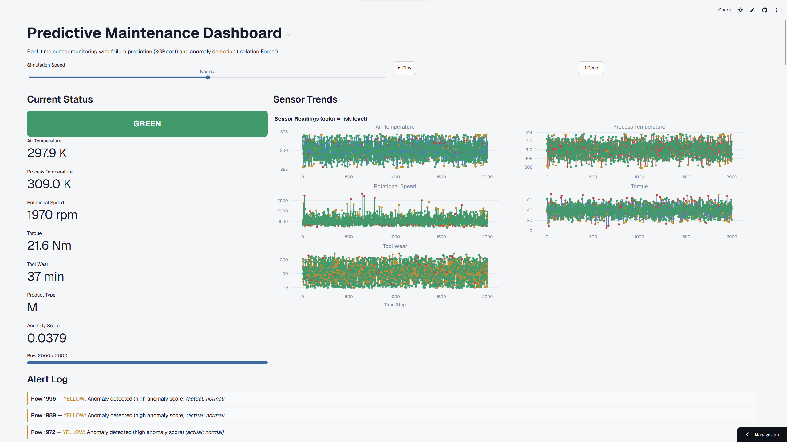
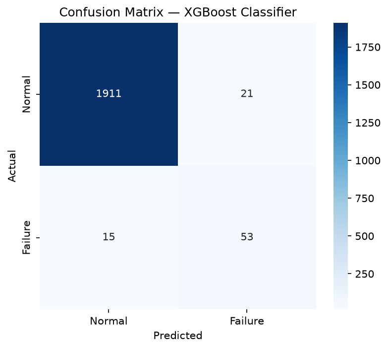

Two-layer detection system for industrial sensor data. An XGBoost classifier identifies known failure types while an Isolation Forest catches unseen anomaly patterns. Deployed as an interactive real-time dashboard.
Unplanned downtime in manufacturing and industrial facilities leads to production losses and expensive emergency repairs. This project simulates a real-time predictive maintenance system that monitors sensor readings and provides early warnings before failures occur.
Using the AI4I 2020 dataset (10,000 rows of simulated industrial sensor data with a ~3.4% failure rate), the system combines supervised classification with unsupervised anomaly detection to catch both known and unknown failure patterns.
Watch sensor data stream in real time with live risk assessment. Every reading is classified and scored by both models simultaneously.

Combining supervised and unsupervised learning for broader coverage against equipment failures.
Supervised classification
Trained on labeled failure data with scale_pos_weight to handle severe class imbalance (~3.4% failure rate). Predicts whether a machine will fail and which failure type.
Unsupervised anomaly detection
Trained exclusively on normal operating data. Detects patterns outside any previously labeled failure type, catching novel anomalies that the classifier was never trained to recognize.
Both models agree the reading is normal
Classifier says normal, but anomaly score exceeds threshold
XGBoost predicts an imminent failure
Evaluated on a stratified test set of 2,000 samples. Recall is prioritized over precision because a missed failure costs more than a false alarm.

Built entirely with open-source tools. No proprietary frameworks or paid services.
Clone the repo, install dependencies, and launch the dashboard in under 5 minutes.
git clone https://github.com/HOSEKI7/predictive-maintenance-ml.git
cd predictive-maintenance-ml
pip install -r requirements.txt
streamlit run app.py